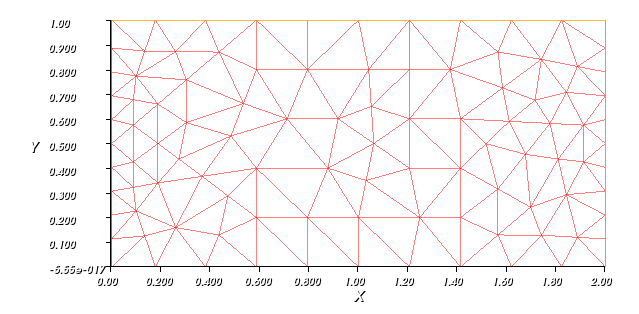
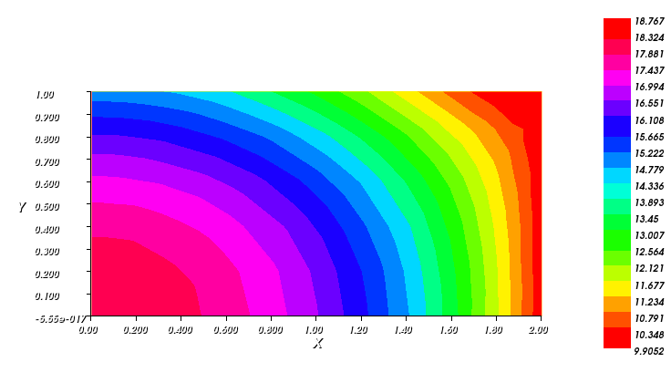
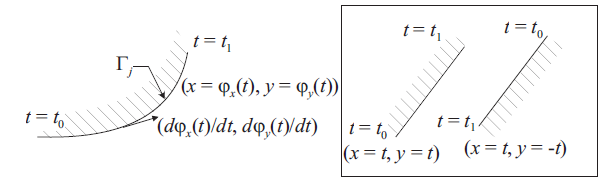
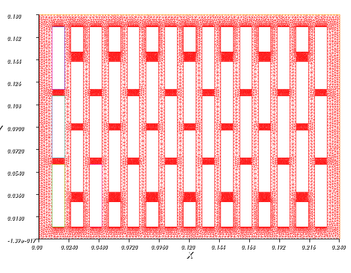
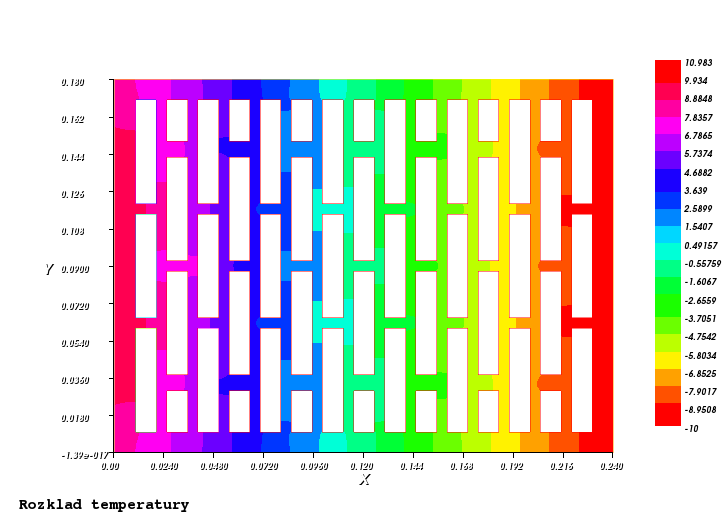
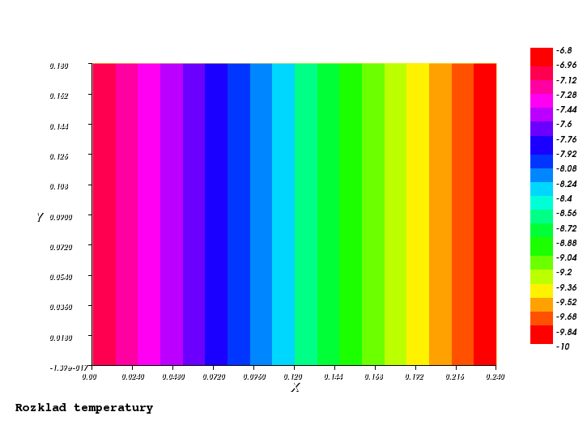
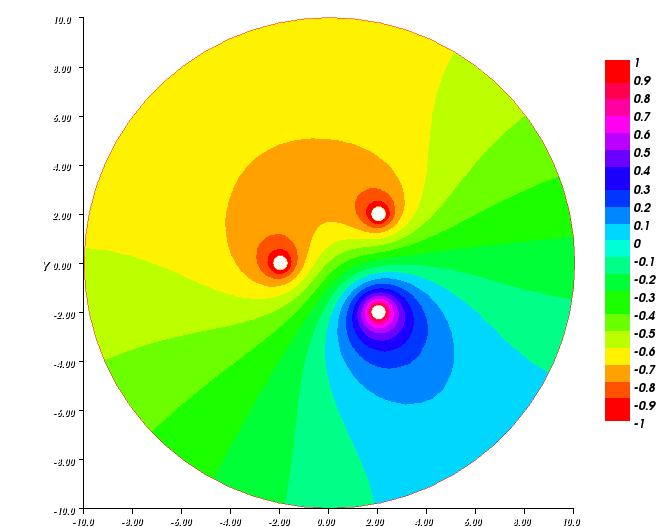

W ogólnym przypadku równanie Poissona ma postać:
lub zapisując krócej:
Równanie Poissona opisujące zjawisko ustalonego przepływu ciepła w obszarze dwuwymiarowym dla materiału jednorodnego i izotropowego o stałej grubości ma postać:
Zdefiniujmy obszar w ktorym poszukiwać będziemy naszego rozwiązania.
int dlugosc=2, wysokosc=1;
border left(t=wysokosc,0) {x=0; y=t;};
border bottom(t=0,dlugosc) {x=t; y=0;};
border right(t=0,wysokosc) {x=dlugosc; y=t;};
border top(t=dlugosc,0) {x=t; y=wysokosc;};
Brzeg obszaru określa się przy użyciu funkcji parametrycznych :
Zdefiniowany brzeg zgodny jest z obiegiem w lewo. Definiowanie brzegów obszarów zgodnie z obiegiem, jest istotną sprawą przy definiowaniu otworów w zadanym obszarze, tym problemem zajmiemy się jednak później.
Generowanie siatki trójkątnej. Zdefiniujmy zmienne typu int określające liczbę węzłów zadanych na brzegach obszaru oraz poleceniem mesh nazwa_siatki = buildmesh(definicja brzegu); wygenerujmy siatkę:
int NpSzerokosc=10 ;
int NpDlugosc=10 ;
mesh siatka=buildmesh(left(NpSzerokosc)+top(NpDlugosc)
+right(NpSzerokosc)+bottom(NpDlugosc));
plot(siatka);
Podobnie jak w pythonie, wizualizację obiektów uzykujemy poleceniem plot , przez co uzyskamy siatkę trójkątną (przedstawioną poniżej) o określonej liczbie węzłów na brzegu zadanego obszaru.
Zdefiniujmy część zasadniczą postawionego w zadaniu problemu. Określamy wartości parametrów podanych w zadaniu k i f, następnie określamy warunki brzegowe - dla warunków Neumanna poleceniem int1d(siatka,brzeg)((wartosc*v)) oraz warunki Dirichleta on(brzeg,zmienna=wartosc)
fespace Vh(siatka,P1);
func f=45;
int k=4;
Vh u,v;
problem Poisson(u,v,solver=LU) =
int2d(siatka)(k*dx(u)*dx(v) + k*dy(u)*dy(v))
- int2d(siatka)( f*v ) - int1d(siatka,left)((0*v))
- int1d(siatka,bottom)((-30*v))
- int1d(siatka,top)((-30*v))
+ on(right,u=10);
Poisson;
plot(u, value=true, fill=true, cmm="Rozklad temperatury");
Po wykonaniu wywołaniu powyższego kodu otrzymamy mapy rozkładu temperatur w rozpatrywanym obszarze dla ustalonych warunków brzegowych:
Metoda elementów skończonych umożliwa znajdowanie przybliżonych rozwiązań problemów których nie sposób rozwiązać w sposób analityczny lub rozwiązanie to jest bardzo trudne do uzyskania. Rozważmy nieco trudniejszy przypadek ustalonego przepływu ciepła przez materiał z pustkami powietrznymi. Przykładem takiego materiału jest pustak typu POROTHERM, stosowany w szeroko pojętym budownictwie mieszkaniowym. Kształt pustaka przybliżono prostokątem o wymiarach ::240x180 mm::, a współczynnik przewodzenia ciepła przyjęto jako \(k = 0.3 \frac{W}{m \circ C}\)
Określamy brzeg obszaru:
real dlugosc=0.24, wysokosc=0.18;
border left(t=wysokosc,0) {x=0; y=t;};
border bottom(t=0,dlugosc) {x=t; y=0;};
border right(t=0,wysokosc) {x=dlugosc; y=t;};
border top(t=dlugosc,0) {x=t; y=wysokosc;};
Aby zdefiniować podobszary nie objęte siątką wewnątrz rozpatrywanego obszaru należy w sposób analogiczny do powyższego określić jego brzegi, a także zastosować się do zasady na poniższym rysunku:
mowiącej tyle, że przy obiegu w prawo po konturze otworu, znak zmiennej ilości węzłów zaadaptowanych do stworzenia siatki powinien być dodatni. Definicja podobszaru:
real h=0.05, b=0.01;
border A11(t=0,0.01){ x=0.01+t; y=0.06; }
border A12(t=0,0.05){ x=0.02; y=0.06-t; }
border A13(t=0,0.01){ x=0.02-t; y=0.01; }
border A14(t=0,0.05){ x=0.01; y=0.01+t; }
Określając ilość węzłów na poszczeglnych brzegach generujemy siatkę pamiętając by poobszarom przypisując znak dodatni:
int Np=20;
int NpSzerokosc=100 ;
int NpDlugosc=100 ;
mesh siatka=buildmesh(
left(NpSzerokosc)+top(NpDlugosc)
+right(NpSzerokosc)+bottom(NpDlugosc)
);
plot(siatka);
Podobnie postępując przy definiowaniu kolejnych współrzędnych konturów pustek powietrznych otrzymujemy siatkę:
Definiując jak w poprzednim przykładzie zasadniczą część rozwiązującą nasze zadanie, dobrano warunki brzegowe zakładając - brak przepływu ciepła przez pustki powietrza (przyjmowane domyślnie przez program nie objęty siatką), - brak przepływu w kierunku pionowym - ustalono wartość temperatury na brzegu prawym - ustalony strumień ciepła na brzegu lewym
fespace Vh(siatka,P1);
func f = 0;
real k = 0.3;
Vh u,v;
problem Poisson(u,v,solver=LU) =
int2d(siatka)(k*dx(u)*dx(v) + k*dy(u)*dy(v))
- int2d(siatka)( f*v )
- int1d(siatka,bottom)((0*v))
- int1d(siatka,top)((0*v))
- int1d(siatka,left)((4*v))
+ on(right,u=-10);
Poisson;
plot(u, value=true, fill=true, cmm="Rozklad temperatury");
Przez co otryzmujemy mapę temperatury:
W tym miejscu można zadać pytanie - “Czy pustki powietrza mają istotny wpływ na przepływ ciepła”? Choć odpowiedź jest oczywista, przekonajmy się rozwiązując to samo zadanie, usuwając utworzone podobszary. W ten sposób uzyskujemy:
Otrzymany rezultat zgodny jest z przewidywaniami. Oprócz pytania ‘czy’ przykład pokazuje ‘jak’ wpływa obecność pustek powietrza na przepływ ciepła. Należy pamiętać, że w przedstawionym tu modelu i obliczeniach pominięto istotne dla sytuacji rzeczywistych aspekty przepływu ciepła,a przykład posłużyłył jedynie do ukazania mnogości problemów możliwych do rozwiązania metodą elementów skończonych.
W stosunkowo łatwy sposób można uzyskać także rozkład potencjału poza nieruchomymi przewodnikami dla ich dowolnej konfiguracji o zadanym potencjale. Jak wiadomo wszędzie poza przewodnikami potencjał \(\phi\) musi spełniać równanie Laplace’a: \(\nabla ^{2}\phi = 0\) Które dla zagadnienia w dwóch wymiarach o współrzednych kartezjańskich przyjmuje postać:
Rozozpatrzmy szkolny przypadek rozkładu potencjału wokół układu 3 kulek o różnym potencjale, z dala od zewnęrznych pól elektrycznych. Zdefinujmy geometrię obszaru wraz z rozkładem kulek.
border C0(t=0,2*pi) { x = 10 * cos(t); y = 10 * sin(t); }
border K1(t=0,2*pi) { x = 2+0.3 * cos(t); y = -2+0.3*sin(t); }
border K2(t=0,2*pi) { x = -2+0.3 * cos(t); y = 0.3*sin(t); }
border K3(t=0,2*pi) { x = 2+0.3 * cos(t); y = 2+0.3*sin(t); }
Na zadanym obszarze rozpinamy siatkę:
mesh Th = buildmesh(C0(60)+C1(-10)+C2(-10)+C3(-10));
plot(Th);
i zapisujemy problem, przypisując przewodnikom kołowym okreslony potencjał:
fespace Vh(Th,P1);
Vh uh,vh;
problem Electro(uh,vh) = int2d(Th)( dx(uh)*dx(vh) + dy(uh)*dy(vh) )
- int1d(Th,C0)((0*vh))
+ on(K1,uh=1)
+ on(K2,uh=-1)
+ on(K3,uh=-1) ;
Electro;
plot(uh,fill=true, value=true);
Przez co uzyskujemy obraz potencjału tzw. ‘mapę’ potencjału na zadanym obszarze:
{kind=link}